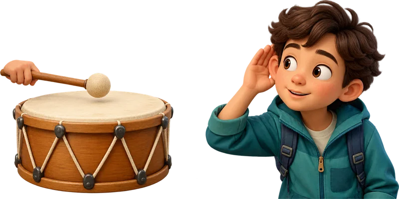
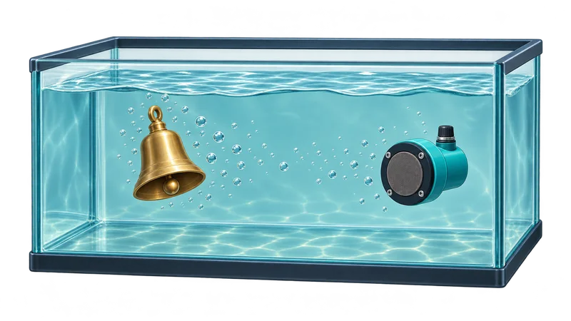
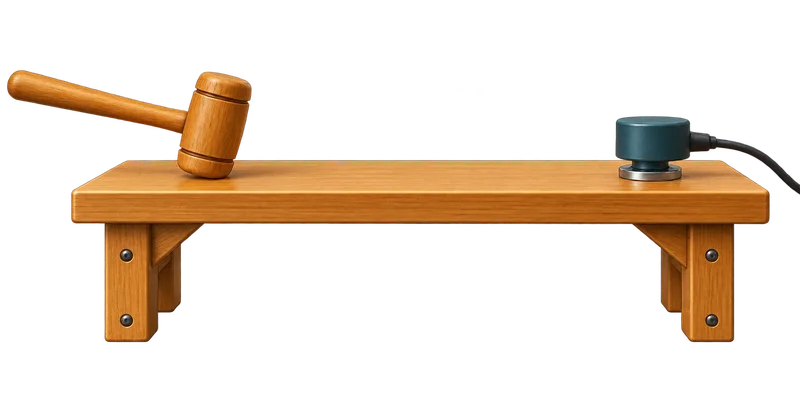
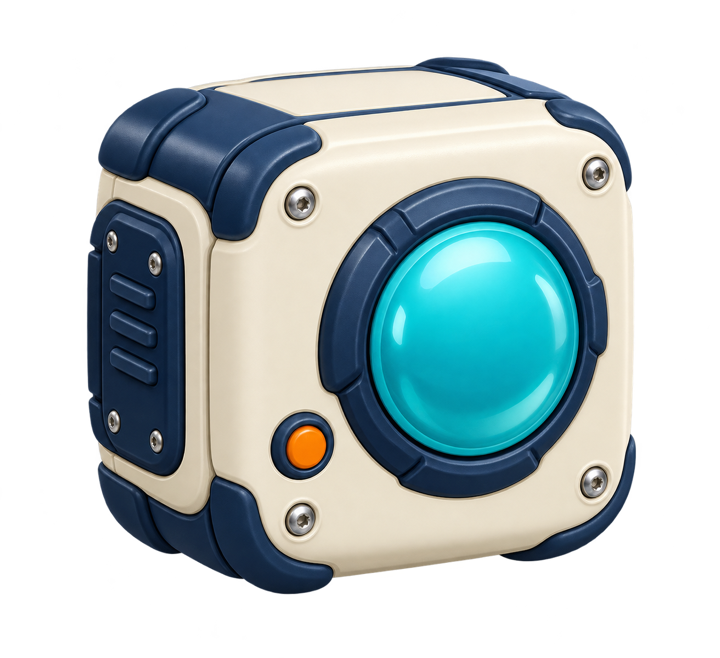

삐오의 소리 노트
소리는 물질을 따라
소리는 무엇을 따라 올까?
북과 귀 사이의 공기를 따라.
물속 종과 감지기 사이의 물을 따라.
탁자와 감지기 사이의 고체를 따라.
세 물질 모두 소리를 전달할 수 있어.

공기

물

고체(탁자)


소리 나는 곳
듣는 곳
공기물고체공기 · 물 · 고체

셋 다 전달해!
소리는 무엇을 따라 올까?
북과 귀 사이의 공기를 따라.
물속 종과 감지기 사이의 물을 따라.
탁자와 감지기 사이의 고체를 따라.
세 물질 모두 소리를 전달할 수 있어.



